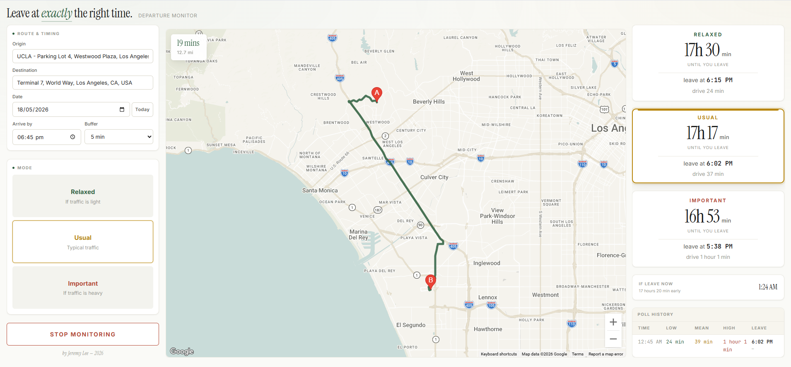
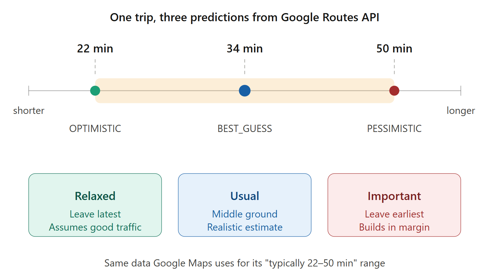
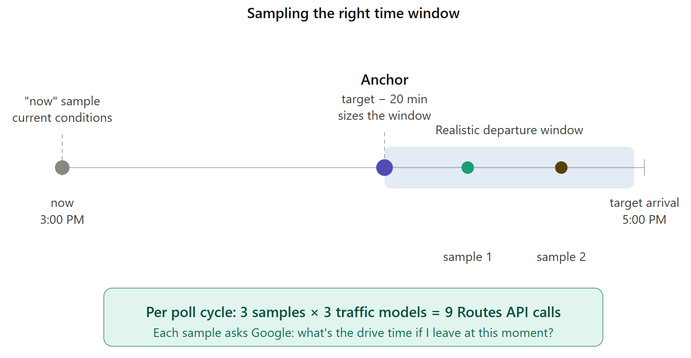

Relaxed = OPTIMISTIC
Assumes conditions are better than typical. The latest leave-by time. For lunch with a friend who is late anyway.
Google Maps tells you what traffic is doing right now.
Every Angeleno knows the routine: refresh Maps, do mental subtraction, guess. This does the arithmetic instead. Tell it where you're going and when you need to be there, and it picks the latest departure that still gets you there on time, counts down to it, and keeps re-checking traffic in the background until it tells you to go.

risk profiles side by side, so you choose your margin per trip instead of guessing one buffer for everything.
the spread between Relaxed and Important on that one real trip. That is the decision the tool exists to make.
Routes API calls per poll cycle: three sample times × three traffic models, because sampling only "now" is the wrong question.
A single self-contained HTML page. Paste in your API key and open it.
↓ where the three modes come from
The three profiles are not a heuristic layered on top of Google. They are
Google's own trafficModel parameter, queried three times:
OPTIMISTICAssumes conditions are better than typical. The latest leave-by time. For lunch with a friend who is late anyway.
BEST_GUESSGoogle's realistic point estimate from live and historical data.
PESSIMISTICAssumes worse than typical. The earliest leave-by time, with margin built in. For flights and interviews.
That spread is exactly the "typically 22–50 min" range the consumer Maps app shows you. The difference is that Maps hands you a range to eyeball and the developer API hands you three numbers you can compute with. The tool is not predicting traffic better than Google — it is turning Google's own uncertainty into a decision.

trafficModel is silently ignored unless
routingPreference is TRAFFIC_AWARE_OPTIMAL. No
error, no warning — you just get the same number back for all three
models and it looks like real data.
↓ the design decision
The naive build polls "how long is the drive right now" every few minutes. It works, and it answers the wrong question. If it is 5:00 PM and you plan to leave at 6:00, current conditions tell you about the 405 at 5:00 — and the 405 at 5:00 and the 405 at 6:00 are close to different freeways.
So instead the tool samples inside your likely departure window. On startup it fires one anchor probe for a departure 20 minutes before your target, uses that baseline to compute a realistic departure window, and then each cycle samples two times within that window plus one "now" sample for live conditions. Three samples × three traffic models = nine calls per cycle.

↓ using it
It is a single-page app you leave open in a browser tab. It shows the countdown, updates the recommendation as traffic shifts, and when the moment arrives it fires a browser notification and an on-screen alert so you do not have to keep looking at it.
↓ what it costs and what it can't do
This is the real friction and it is worth stating plainly. The tool needs a Google Maps API key with four APIs enabled — Routes, Maps JavaScript, Places (the classic one, not "New"), and Directions — pasted into the HTML file. It is not a hosted service you can just click into, and at nine calls per poll cycle a long monitoring session is not free if you exceed Google's free tier.
It also inherits every limitation of its source. If Google's pessimistic estimate is wrong about a crash that has not happened yet, so is this. The tool improves the decision, not the underlying forecast.
Finish · what it is built on
trafficModel valuesroutingPreference: TRAFFIC_AWARE_OPTIMAL, without which the traffic model is ignored